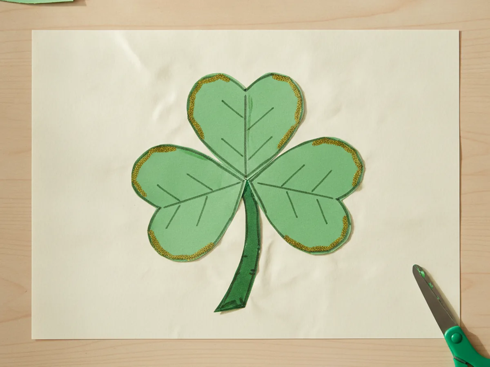
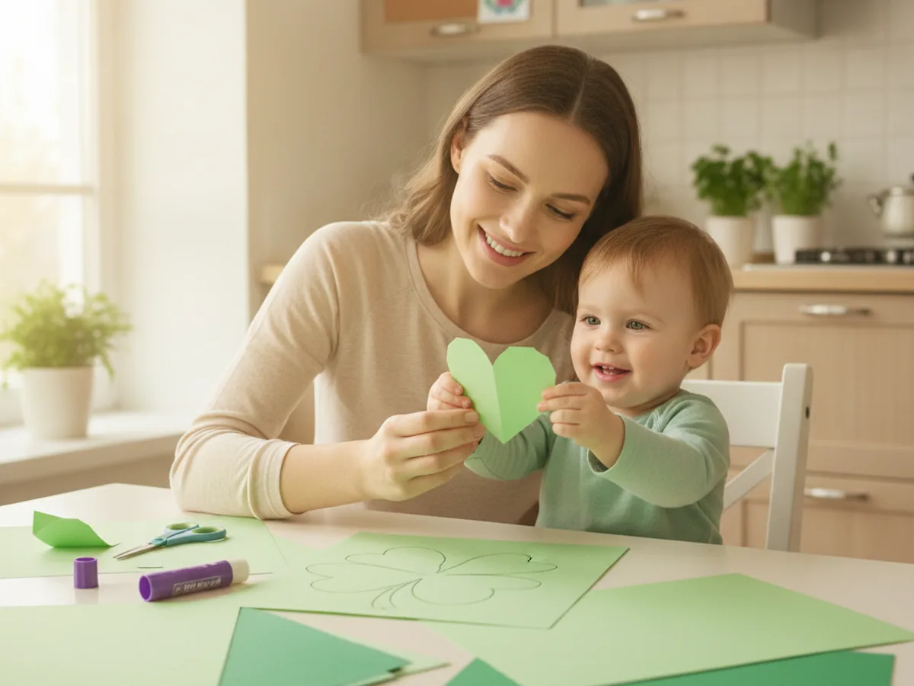
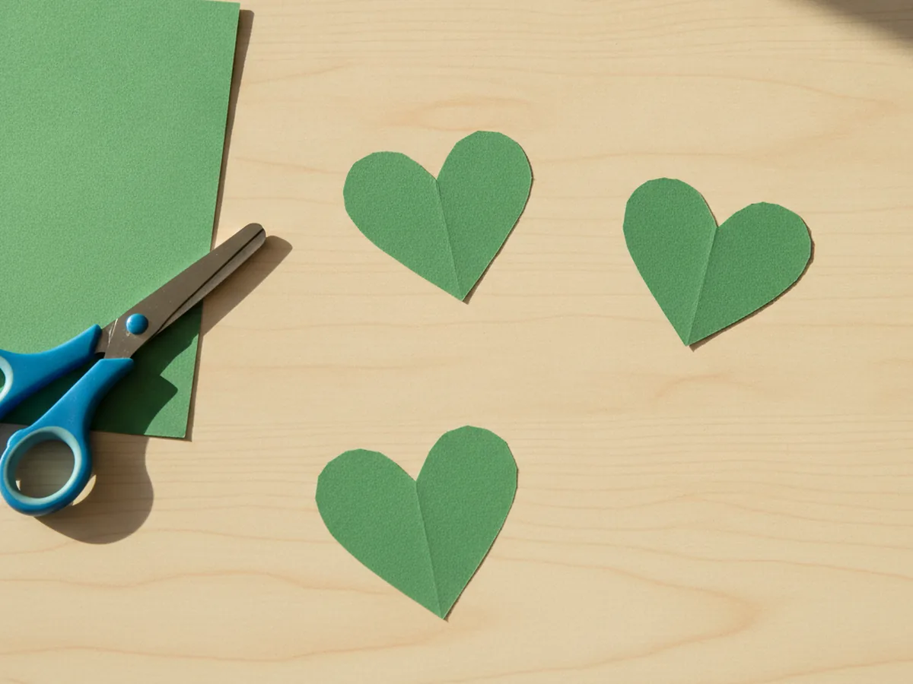
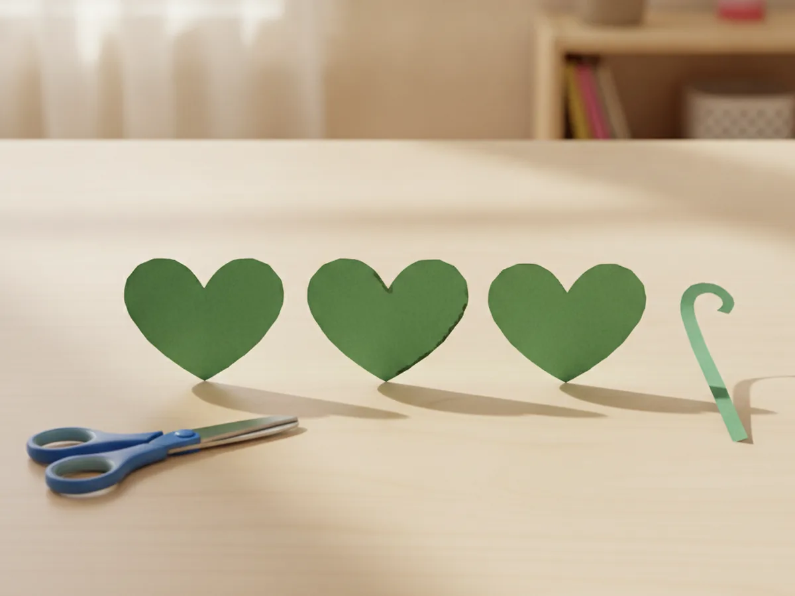
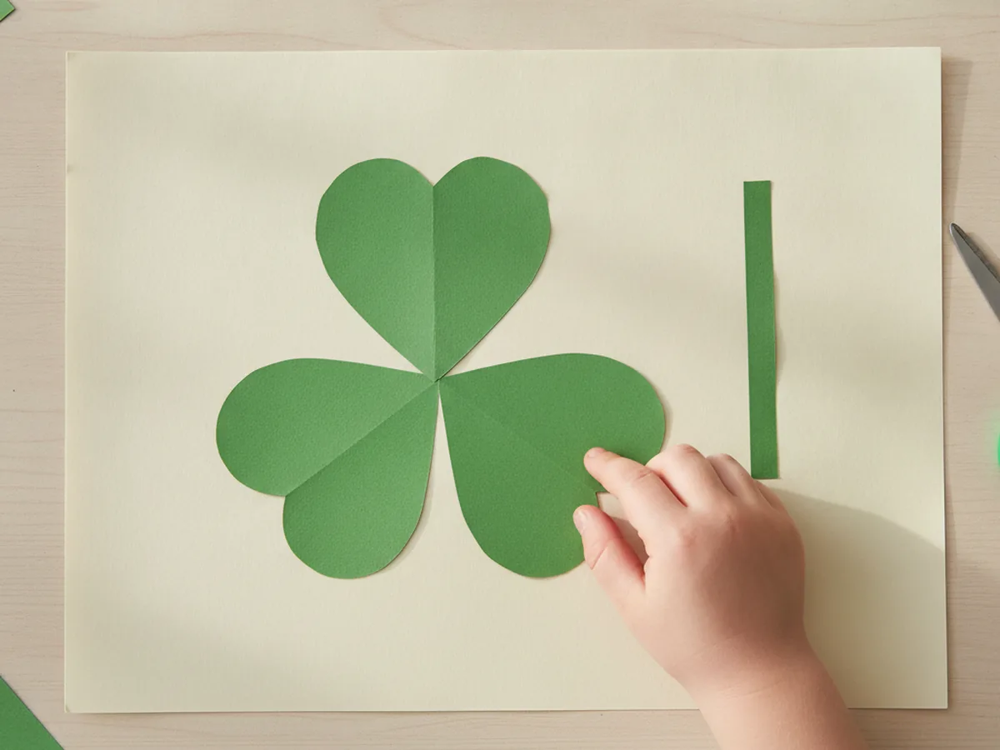
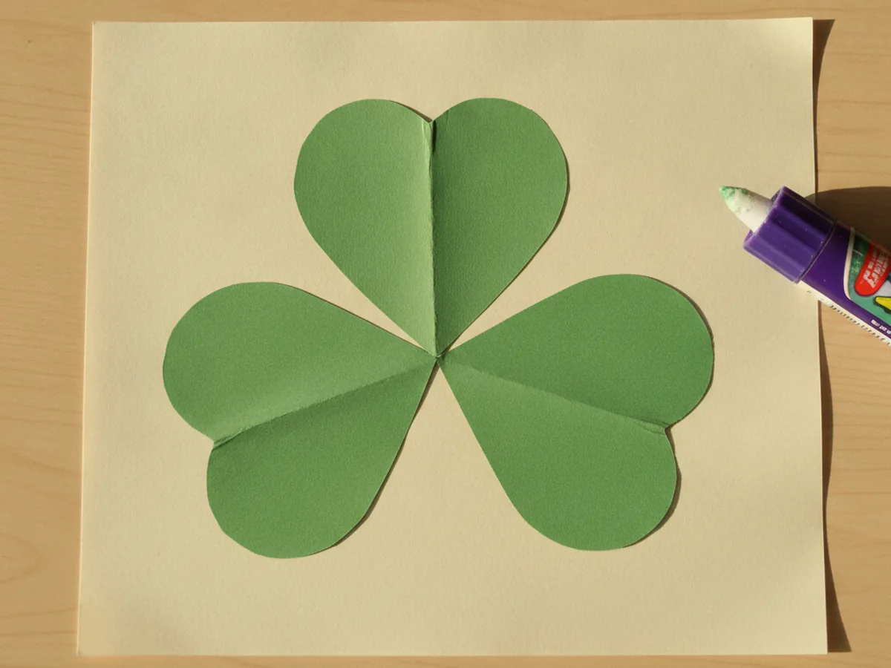
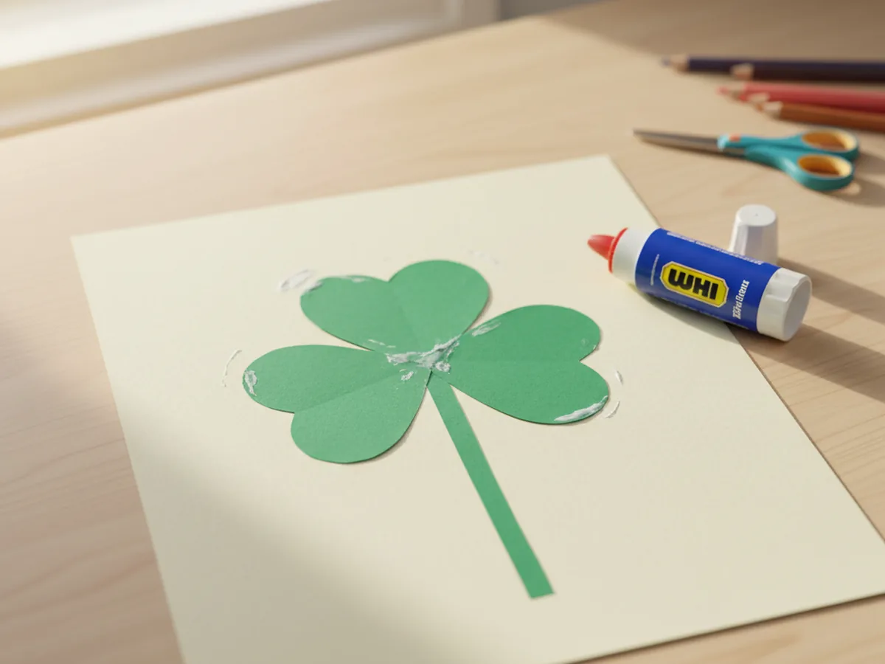
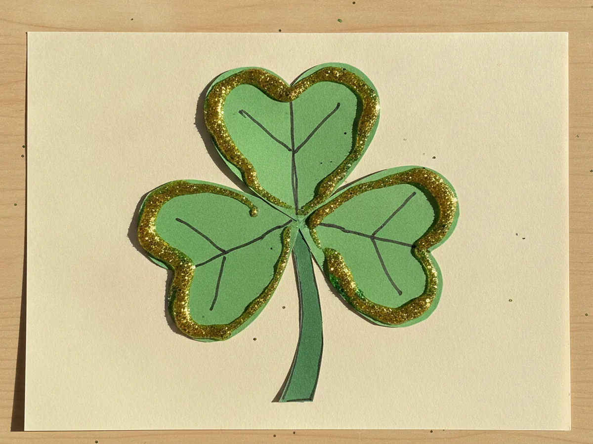

There is something so cheerful about a bright green shamrock, and the happy news is you do not need the luck of the Irish to make one. This simple shamrock paper craft turns three little paper hearts into a sweet three-leaf clover your child can make in about half an hour. It uses easy shapes, just glue and scissors, and ends with a festive decoration that is perfect for St. Patrick's Day. Grab some green paper and let's make a lucky shamrock together right at the kitchen table!
Why Kids Love This Craft
Kids feel a little burst of pride when they realize three plain hearts can magically turn into a shamrock. Choosing the green shades, snipping the shapes, and fitting the points together feels like a fun puzzle they get to solve. By the end, they have a festive little clover they made all by themselves, and that "look what I did" feeling is the best part. 🍀
There is gentle learning tucked into the fun too. Cutting the curved heart tops builds scissor control and patience, while lining up the three points in the center helps with placement and early shape awareness. It is a sweet, low-key way to practice fine motor skills without it ever feeling like a lesson.
Best of all, this shamrock paper craft is wonderfully forgiving. The hearts do not need to be perfect, and a slightly wonky clover only makes it look more handmade and charming. It stays low-mess with just paper and a glue stick, which makes it an easy yes on a busy afternoon, and it works for a wide range of ages. Older kids can cut every shape themselves, while a toddler can simply press the hearts down where you point, so everyone gets to join in at their own pace.

What You'll Need
Here is everything you need for this easy shamrock paper craft, and most of it is probably already in your craft drawer.
- Construction paper, green for the shamrock plus a light sheet for the background.
- Green cardstock, optional, for a sturdier shamrock that stands up to lots of handling.
- Washable glue sticks, for sticking the hearts and stem onto the background.
- Child-safe scissors, for cutting the heart shapes and the stem.
- Washable markers, for adding leaf veins, a face, or other fun details.
- Green glitter glue, optional, for a little touch of St. Patrick's Day sparkle.
- A pencil, for lightly sketching the heart shapes before cutting.
Step-by-Step Instructions
Ready to make some good luck? Follow these simple steps and you will have a cheerful clover in no time, with a few helper tips along the way.
Step 1: Cut the Three Heart Shapes
Start by making the leaves, since they are the heart of the whole craft. Take a sheet of green construction paper, fold it in half, and cut out a heart shape. Folding the paper first means both sides of the heart come out nice and even. Cut three hearts in total, keeping them roughly the same size so your shamrock looks balanced. These three green hearts are the secret behind this whole shamrock paper craft.

Step 2: Cut the Stem
Every shamrock needs a little stem to ground it. Cut one thin strip of green paper, about three or four inches long. You can keep it straight or give it a gentle curve, whichever your child likes best. A slightly darker green stem looks especially nice against the brighter leaves, but any green you have on hand works perfectly.

Step 3: Arrange Your Shamrock
Now for the fun part where everything comes together. Lay a background sheet down, then place the three green hearts on top with their pointed tips all meeting in the center. Wiggle them around until they look like a classic three-leaf clover. This is the magic moment of the shamrock paper craft, when three simple hearts suddenly turn into a shamrock right before your eyes.

Step 4: Glue the Hearts Down
Once you are happy with the shape, it is time to make it stick. Lift one heart at a time, rub a little glue on the back, and press it firmly back into place. Keep the three points snug together in the middle so the shamrock looks full and connected. Smooth each heart down with your fingers so the edges lie nice and flat.

Step 5: Add the Stem
Your clover is almost ready. Add a dab of glue to the green stem and press it down so it points down from the center where the three hearts meet. Tuck the top of the stem just slightly under the hearts so it looks like it is growing right out of the shamrock. Press it flat and admire how much it already looks like the real thing.

Step 6: Decorate Your Shamrock
Here is where your child can add their own special touch. Use markers to draw little leaf veins down the center of each heart, or give the shamrock a happy face with two dot eyes and a smile. For a festive finish, add a few lines of green or gold glitter glue around the edges for a bit of holiday sparkle. Step back and admire the lucky little shamrock you grew together. ✨

Variations to Try
Handprint Shamrock: Instead of cutting hearts, trace and cut out three of your child's handprints in green paper and arrange them with the wrists meeting in the center. The little fingers fan out like leafy clover petals, and you end up with a keepsake that captures how tiny their hands are right now.
Lucky Four-Leaf Clover: Cut a fourth heart and add it to the arrangement for a four-leaf clover instead of a three-leaf shamrock. It is a fun way to talk about what makes a clover extra lucky, and older kids love hunting for that rare fourth leaf.
Tissue Paper Mosaic Shamrock: Skip the flat hearts and let your child glue small squares of scrunched green tissue paper onto a drawn shamrock outline instead. It adds a soft, bumpy texture and gives little fingers some extra sensory fun while they fill in the shape.
Final Thoughts
This shamrock paper craft is one of those simple projects that gives back so much more than the few supplies it takes. It is quick, low-mess, and full of cheerful green, and it brings a little bit of St. Patrick's Day magic right to your kitchen table. Whether you make one shamrock or a whole lucky bunch, the real treasure is the time spent snipping, gluing, and giggling together. It is the kind of slow, screen-free afternoon that turns into a sweet little memory, and you end up with a festive keepsake to enjoy all season long. 🌈
I would love to see the lucky shamrock your family makes. Hang it in a window, tape it to the fridge, and most of all, savor this happy moment with your little one. Happy crafting, friend!
More Crafts You'll Love
If your little one enjoyed this lucky shamrock, these bright and cheerful paper projects make the perfect next craft: